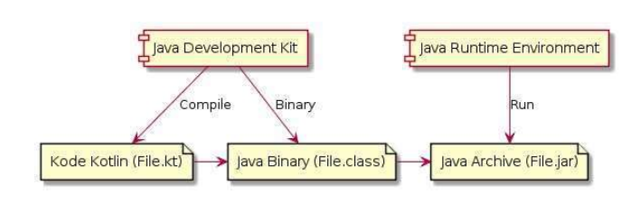
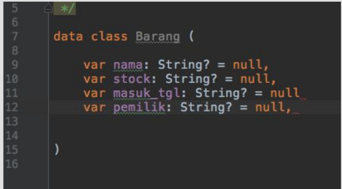
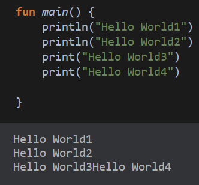
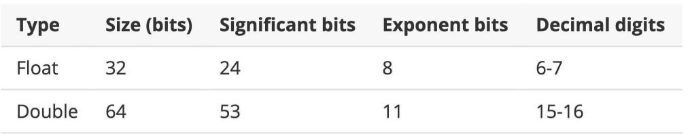
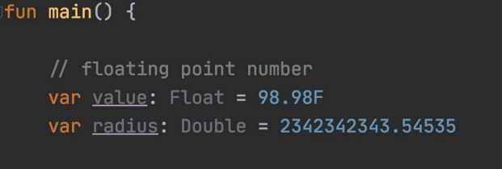
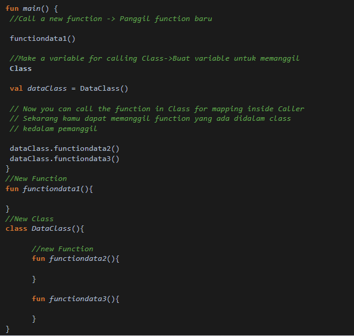
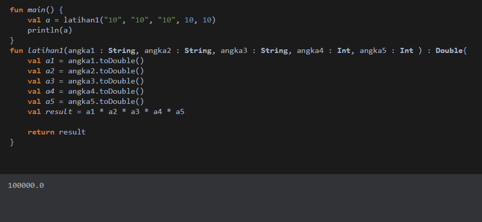

Kotlin Dasar
Syarif Hidayatullah, S.Kom., M.Kom.
Sejarah Kotlin
- Bahasa Pemprograman Kotlin dikenalkan oleh Perusahaan JetBrains pada tahun 2011
- Awalnya Kotlin adalah bahasa Pemprograman yang berjalan di JVM (Java Virtual Machine)
- Kotlin di Desain agar terintegrasi dengan Java
- Tahun 2017, Google mengumumkan bahwa Kotlin adalah bahasa Pemprogramanyang direkomendasikan untuk pengembangan aplikasi android
Apa itu Kotlin ?
Kotlin adalah sebuah bahasa pemrograman dapat digunakan semua platform seperti JVM, Android, dan Java Script. Kotlin diambil dari sebuah pulau di negara Rusia yaitu Kotlin Island yang dikembangkan oleh JetBrain.
Kotlin ini dapat dioperasikan secara bersamaan dengan bahasa java contoh kasus ketika kita menjadi mobile developer dan ingin memaintenance aplikasi tersebut tapi kita hanya menguasai kotlin sedangkan penggunaan bahasa sebelumnya pada aplikasi tersebut oleh senior developer menggunakan bahasa java disini kita tetap bisa menggunakan bahasa kotlin secara bersamaan tanpa merusak kodingan sebelumnya
Kenapa Belajar Kotlin
- Java adalah bahasa pemprograman paling populer didunia
- Ekosistem teknologi pendukung java sudah sangat besar dan dewasa
- Kotlin adalah bahasa pemprogramanyang dapat berjalan diatas JVM
- Bahasa pemprograman Kotlin lebih elegan dan sederhana dibanding java
- Kotlin menjadi bahasa pemprograman utama untuk pengembangan aplikasi Android
- Spring (Framework Backend Java terpopuler) sekarang sudah mendukung Kotlin
Kenapa Harus Kotlin?
- Less code Artinya kode yang kita buat jauh lebih sedikit dan sederhana dibanding kita menggunakan java.
- Null Safe Karena kotlin aman dari masalah Nullbility dan Mutability pada umumnya program akan force close ketika variable belum didefinisikan
- Interoperable Seperti yang dikatakan sebelumnya kotlin itu introperable atau dapat dijalankan bersamaan dengan java
- Have a Unique Library Mempunyai beberapa jennis library unik yang hanya dimiliki oleh kotlin tersebut contohnya library anko library ini mendukung program tanpa XML code untuk layout nya dan ada jenis lainnya seperti KTK dan Coin library
- Lambda Expression Object Oriented dan Functional nya menggunakan lambda ini juga mendukung agar code kita lebih menjadi sedikit
- Android Kotlin Extension Kotlin ini sangat sangat hemat code dia mempunyai plugin android kotlin extension ini juga digunakan agar source code yang lebih simple dan mudah dibaca dibandingkan java
Software Development Kit
- SDK adalah perangkat lunak yang digunakan untuk proses Development
- SDK digunakan untuk melakukan kompilasi kode program Kotlin dan menjalankan kode program Kotlin
- Java Development Kit Versi 8 keatas
- https://jdk.java.net
Proses Development Program Kotlin

Integrated Development Invironment
- IDE adalah smart editor yang digunakan untuk mengedit kode program Kotlin
- IDE juga digunakan untuk melakukan otomatisasi proses kompilasi kode program Kotlin dan otomatisasi proses menjalankan program Kotlin
- JetBrains Intellij IDEA
- https:www.jetbrains.com/idea/
#Contoh penulisan POJO dalam Java
#Ketika POJO Menngunakan Kotlin

Program Pertama Kotlin
Cara membuat program kotlin kita dapat memanfaat kan playground yang ada di situs resmi kotlin kita bisa membuka link ini https://play.kotlinlang.org

Program Pertama Kotlin
Cara membuat program kotlin kita dapat memanfaat kan playground yang ada di situs resmi kotlin kita bisa membuka link ini https://play.kotlinlang.org
Dalam program hello world terdapat 2 perbedaan untuk perintah menampilkan yaitu print (Menampilkan dengan tidak membuat line baru) dan println (Menampilkan dengan membuat line baru)
Tipe Data Number
- Integer Number
- Floating Number
Floating Point Number

Floating Point Number

Variable Mutable dan Immutable
Apa itu Mutable dan Immutable ? Mutable (var) adalah sebuah deklarasi variable yang menandakan data yang didalam variable tersebut dapat diubah sedangkan, Immutable (val) adalah kebalikannya yaitu sebuah deklarasi variable yang menandakan dari yang didalam variable tersebut tidak dapat dirubah untuk lebih jelasnya kalian bisa lihat contoh program dibawah ini :
Conditional
Conditional atau bisa kita sebut percabangan dalam suatu program untuk menentukan nilai dalam data tersebut contoh kasus dalam array data ada kata kunci jakarta, jogja, padang. Jika data yang dipilih jakarta maka yang ditampilkan adalah kerak telor, jogja = bakpia, padang = rendang. Tampilkan data ketiga ketika tidak ditemukan kata kunci maka outputnya data tidak ditemukan, jika ditemukan maka outputnya sesuai makanan daerah masing masing
Looping Data
Looping adalah seuatu perulangan data yang difungsikan agar data yang diinginkan otomatis diulang dengan berbagai aturan tertentu contoh program looping kalian dapat lihat dibawah ini :
Looping Data
Looping adalah seuatu perulangan data yang difungsikan agar data yang diinginkan otomatis diulang dengan berbagai aturan tertentu contoh program looping kalian dapat lihat dibawah ini :
Calling Function and New Class
Function adalah sebuah serangkaian kode yang disembunyikan dari pemanggil sedangkan, Class adalah kumpulan beberapa function yang memiliki tugas tugas tertentu nahh… disini kita akan membahas bagaimana cara cara memanggil function atau class baru pada function pemanggil untuk lebih jelasnya kalian bisa melihat code dibawah ini :
Calling Function and New Class

Task Complex
- Task 1 : membuat sebuah function dengan 5 parameter , 3 string , 2 integer dan mempunyai return double semua nilai dikalikan semua
- Task 2 : bikin sebuah class dengan mempunyai 3 function dan waktu dipanggil function dikalikan
Completed Task
Task 1 :
